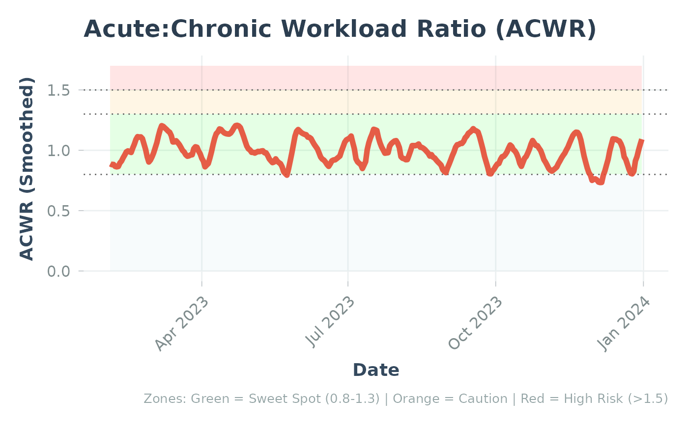

Enhanced ACWR Plot with Confidence Bands and Reference
Source:R/plot_acwr_enhanced.R
plot_acwr_enhanced.RdCreates a comprehensive ACWR visualization with optional confidence bands and cohort reference percentiles.
Usage
plot_acwr_enhanced(
acwr_data,
reference_data = NULL,
show_ci = TRUE,
show_reference = TRUE,
reference_bands = c("p25_p75", "p05_p95", "p50"),
highlight_zones = TRUE,
title = NULL,
subtitle = NULL,
method_label = NULL
)Arguments
- acwr_data
A data frame from
calculate_acwr_ewma()containing ACWR values.- reference_data
Optional. A data frame from
cohort_reference()for adding cohort reference bands.- show_ci
Logical. Whether to show confidence bands (if available in data). Default TRUE.
- show_reference
Logical. Whether to show cohort reference bands (if provided). Default TRUE.
- reference_bands
Which reference bands to show. Default c("p25_p75", "p05_p95", "p50").
- highlight_zones
Logical. Whether to highlight ACWR risk zones. Default TRUE.
- title
Plot title. Default NULL (auto-generated).
- subtitle
Plot subtitle. Default NULL (auto-generated).
- method_label
Optional label for the method used (e.g., "RA", "EWMA"). Default NULL.
Details
This enhanced plot function combines multiple visualization layers:
Risk zone shading (sweet spot: 0.8-1.3, caution: 1.3-1.5, high risk: >1.5)
Cohort reference percentile bands (if provided)
Bootstrap confidence bands (if available in data)
Individual ACWR trend line
The layering order (bottom to top):
Risk zones (background)
Cohort reference bands (P5-P95, then P25-P75)
Confidence intervals (individual uncertainty)
ACWR line (individual trend)
Examples
# Example using sample data
data("athlytics_sample_acwr", package = "Athlytics")
if (!is.null(athlytics_sample_acwr) && nrow(athlytics_sample_acwr) > 0) {
p <- plot_acwr_enhanced(athlytics_sample_acwr, show_ci = FALSE)
print(p)
}
#> No reference data provided. Setting show_reference = FALSE.
#> Warning: Removed 18 rows containing missing values or values outside the scale range
#> (`geom_line()`).

if (FALSE) { # \dontrun{
# Load activities
activities <- load_local_activities("export.zip")
# Calculate ACWR with EWMA and confidence bands
acwr <- calculate_acwr_ewma(
activities,
method = "ewma",
ci = TRUE,
B = 200
)
# Basic enhanced plot
plot_acwr_enhanced(acwr)
# With cohort reference
reference <- cohort_reference(cohort_data, metric = "acwr_smooth")
plot_acwr_enhanced(acwr, reference_data = reference)
} # }